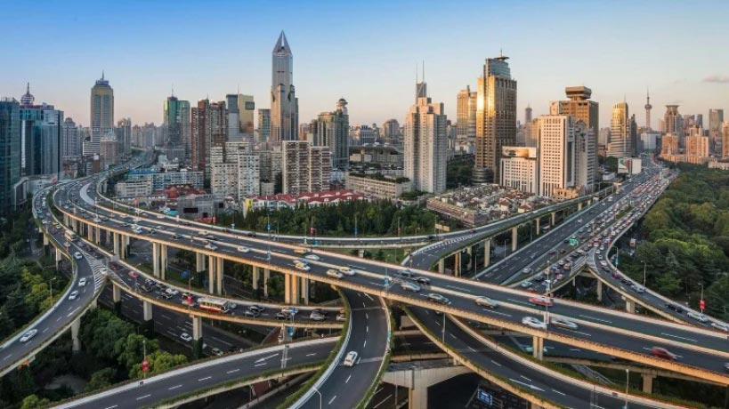

From smart land-use to sustainable communities
Issue
In 2010 Schiedam seized the opportunity to use the roof of a 2.5 km motorway tunnel to relocate sports facilities and redevelop their former sites. Schiedam was «unlocked» in close cooperation with citizen groups and sports clubs, as well as private companies, to ensure the feasibility of plans produced in the participative process. It also minimised public financial risks and was combined with a smart procurement strategy and room for private initiatives.
This programme supports social cohesion and inclusion by developing new multifunctional sports facilities while adding 640 sustainable dwellings to facilitate local housing for citizens.
Goals
To promote upward social mobility by improving its housing stock and facilities, encouraging talented, economically successful citizens to stay in the city.
Solution
The good practice offers the following solutions:
- Efficient spatial integration of main national infrastructure
- Substantial mitigation of air pollution and noise compared to the effects achieved by a traditional approach to motorway construction
- Improved urban green areas that are well connected to the rural areas outside Schiedam by walking and cycling routes
- Stimulating a healthy, active life style by building new and multi-functional sports facilities with added features like physiotherapy, a childcare centre and a (1,200 pupil) dance school
- Vital sport clubs organising activities that contribute to social cohesion and inclusion
- Development of 640 new, all-electric apartments and houses that contribute to a sustainable, differentiated and higher quality housing stock
- Retaining higher income groups in the city by improving public facilities and housing stock
- Supporting a local housing career for Schiedam citizens as a contribution to upward social mobility
Severities
To promote upward social mobility by improving its housing stock and facilities, encouraging talented, economically successful citizens to stay in the city.

And cities have seen a 50% faster growth in terms of GDP, and saw an increase in jobs of 7%, in comparison to other areas which have stagnated over the last years. Many cities are busied with developing new residential areas, space for businesses or mixed-use districts. Looking in the back-mirror, cities have not just started their growth periods. The facts presented in the future forecasts base themselves on the steady growth history of the past decades.
Another subtitle
Nor is it the latest news that traffic in our cities is growing. And this is only the logical consequence of the growth pathways of population, businesses and new building developments — more people and more opportunities result in more traffic needs. The growing traffic figures have been met by supplying enough space to accommodate those traffic needs for over at least five decades. The most prevalent solution